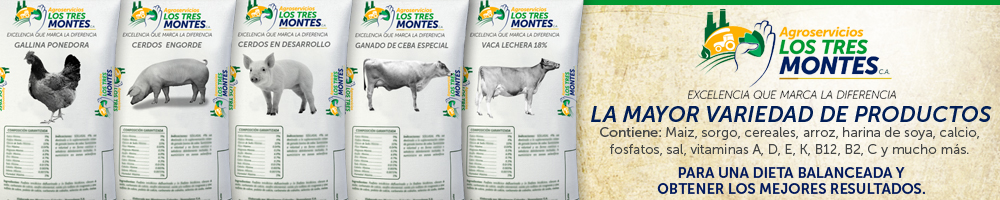

| Inicio | Noticias | Productos | Contacto | Importancia |
En contraposición a una vida ligada al deporte y la actividad física periódica tenemos al Sedentarismo Físico, siendo considerado como la carencia de actividad física de variada intensidad, siendo esta costumbre la responsable de una Vulnerabilidad en la Salud, impidiendo al cuerpo a ofrecer una respuesta favorable ante una variada cantidad de trastornos, sobre todo en lo que respecta a Enfermedades Cardiovasculares.
La práctica del deporte ayuda a disminuir una gran cantidad de enfermedades tales como Infartos de Miocardio, además de lograr una reducción del Peso Corporal, siendo justamente una de las formas de prevenir la Obesidad, además de beneficiar al cuerpo con una mayor Movilidad Articular, sumado a incrementar las Capacidades de Reacción de nuestro cuerpo y poder mejorar las Habilidades Corporales.
Además, el Deporte ayuda a la Salud en lo que respecta a nuestro día a día, contribuyendo a eliminar la Sensación de Cansancio que podemos sufrir si no lo practicamos frecuentemente, además de eliminar la Sensación de Malestar que puede aquejar a quienes tienen una vida sedentaria, sumado además a eliminar la Baja Autoestima que suele aparecer en aquellas personas que se encuentran disconformes con su propia Imagen Corporal.
Además, se suele relacionar a la práctica y los Valores del Deporte como una forma de poder inculcar el cumplimiento de las reglas, el Juego Limpio, la nobleza que tiene realizar una Competencia Deportiva y demás valores educativos que ayudan a no solo mejorar la calidad de vida, sino inclusive a mejorar el futuro de quienes practican un deporte, garantizando una buena salud y una conciencia sobre los cuidados personales.
...
